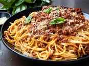

Classic Spaghetti Bolognese

Ingredients used to make Classic Spaghetti Bolognese
- 250g spaghetti
- 400g ground beef
- 1 onion, chopped
- 2 cloves of garlic, minced
- 400g canned tomatoes
- 2 tablespoons tomato paste
- 1 teaspoon dried oregano
- Salt and pepper to taste
Steps of preparing Classic Spaghetti Bolognese
- Cook the spaghetti according to the package instructions.
- In a large pan, brown the ground beef over medium heat.
- Add the chopped onion and minced garlic to the pan and cook until the onion is translucent.
- Stir in the canned tomatoes, tomato paste, dried oregano, salt, and pepper. Simmer for 20 minutes.
- Serve the Bolognese sauce over the cooked spaghetti and enjoy!
Back to home page